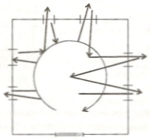
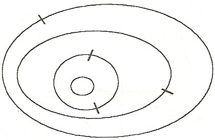

Культура и музей к 2000 году
Эти материалы состоят из рукописного плана выступления, короткого машинописного текста, развивающего и «заостряющего» тезисы плана и неозаглавленного шестистраничного машинописного текста, представляющего собой, по-видимому, расшифровку аудиозаписи выступления. Первые две страницы этого текста обильно правлены автором. Кроме того, к этим текстам приложены выписанные на отдельном листке цитаты из книги Н.А. Дмитриевой, которые мы воспроизвели в примечании. Пометки и добавления на полях воспроизводятся в постраничных сносках, авторская правка внесена в основной текст, правка составителя дана в квадратных скобках, выпущенные места – в угловых. Не поддающиеся расшифровке места,а также слова, расшифровываемые нами лишь предположительно, также даны в угловых скобках.
К сожалению, мы не смогли выяснить, где именно был прочитан этот доклад. Судя по тексту, он относится к 1977 году. Не удалось также узнать что-либо об упоминаемых в тексте участниках дискуссии.
Культура и музей к 2000 году
План выступления
1. Культура и образование.1 Музей — странный кентавр культуры и "образования". Уродливый кентавр. Музей начинается с двери. "Сшибка" — отсюда плясать.
2. "Культурный человек"—спор образов личности. Трагедия формирования личности.2
Зритель — и его "формирование" в музее. Создание "образа-кентавра". Музей одной картины. О круговом — и прямолинейном движении.
Два фокусирования <нрзб> в голове каждого зрителя.
О "Кентавре" Апдайка.
3. Вне-положность <как?> определение культуры 3—
и вот — от визуального — к речевому, поэтич<ескому?>, <метафорическому?> <2 слова нрзб>
— и вот — выход <6 слов нрзб>
один вариант — Пикассо... (поэтич<еский?>)
другой — Матисс... (архит<ектурный?>)
ИЛИ:
1. музей — гость культуры в стране образования.
Объяснимся…
2. музей — в дилемме: человек образованный (слово — знак?) и (<=>) культурный (слово — речь — <внутренняя речь ?>
3. музей — в дилемме <нрзб> – вопрос — речь. Пикассо.
<2 слова нрзб> Выход.4
Заострение тезисов. Музей как образ культуры
К тезису I.
Музей в сложной ситуации — гостя культуры в стране образованности. Это — во многом:
а. Новое время — появление картин, специально (еще на мольберте, на чистом холсте), предрасположенных к музею, для музея, для специального глядения. Они должны и глядеться не в храме, не на стенах, не в городе, но — навешанные извне на стены, независимые друг от друга и помещенные рядом друг с другом. В эту позицию ставятся и "вещи", фрагменты иных веков, иных культур. Они втаскиваются внутрь зала, нумеруются, каталогизируются, входят в энциклопедически-образовательный ряд, чтобы возможно было — оптом! — в данный момент (час) «знать»произведения искусства всех веков. Музей и "институт образования".
б. Способ восприятия: все вещи — рядом; движение зрителя через, — мимо...
Сначала, — при входе в дверь зала — взгляд, разом цепляющий — поверхностно — все (детали не видны, иерархии, центра нет) цветовые и скульптурные пятна, движение взора — иногда невольное — скажем, слева — направо... Затем, реальное, телом — движение, желательно (или — не желательно?) хронологическое, образовательное5. Ногами и глазами — по залу, по его поверхности, по правилу — "по одежке протягивай ножки", — протягивай ножки по образованности, по временной кривой. Но тут же — необходимое для искусства Нового времени — вхождение вглубь каждой картины, каждого экспоната, через раму — в пространство (особая перспектива) картины, и — из зала — иллюзорно — уходишь. Но ногами-то — здесь, и иным своим взглядом-то, пусть поверхностным — здесь; другие картины и в этот момент неявно, пятнами, ассоциациями — вписываются в эту картину.

СХЕМА 1
Неоднократно — входишь вглубь и выходишь — из картины в зал — и снова вглубь, в иную картину, этаким звездным, — то – глазом — перпендикуляр, то — ногами — горизонталь, — зигзагным движением.
Так — уже так — в культуру Нового времени переламывается культура всех эпох. Так — по характеру восприятия, по характеру движения, по внутреннему интерьеру... А в этой культуре — "культура" — производное от образованности.
Но — нота бене! — все не совсем так. Ведь, одновременно, возникает свобода движения, связывания картин — в разных вариантах, свобода — заново — строения культуры6. Зародыш — именно — в музее — в самих пороках его. Уже здесь возможность — выхода за границы Нового времени, — в современность.
в. Это еще резче, когда — зал — в зал. Круговое и вертикальное движение; векторное, наматывающее, и — звездное; поверхностное, все — разом, "снимаясь" в глазу — и глубинное — иллюзорное, возвращающееся, перебегающее, замыкающееся на центр... Музей начинается с двери. Музей — это дверь. Культура — через дверь снимается культурой, эпоха — эпохой, синхронного диалога нет, но — он становится возможным. (Квази-одновременность одного — час — два... — похода, перебежка по залам, возвращение (а пробегаемые картины невольно в глаза лезут) к полюбившейся, для тебя — центральной — вещи. Ср. музей одной картины, выставки...). И снова — нота, нота бене!! — динамика многих — тобой построяемых — вариантов синтеза.

рис. 2
[Подпись к рисунку:] Каждый зал или два зала — через дверь — весь диалог культур, — по расширяющимся кругам.
Выход — прогноз: признать эту динамику, взять ее за основу. А суть ее — замыкание на что-то (? одно). Кругом зала. Кругом музея!!? Залы и музеи, фокусируемые вокруг однойкартины, или — одного художника и — нота бене! — все — строить вокруг искусстваXXвека, — ср. Пикассо... сознательно стравливающего(гротеск, "по мотивам",… стилизация, ирония) разные культурыi. Делать этот (XX века) зал организующим центром; ведь именно в нем осуществляется переход пафоса образования в пафос культуры. От него начинаешь, — его развертываешь по залам-культурам, им кончаешь...
N.B. также — проблема намека на иную — скажем, архитектурную, вписанность в стены... иную перспективу.ii Здесь — необходимая сшибка. N.B. — Сделать из"двери", "перехода"(туда—сюда)— из "культуры на границах", — основной рычаг композиции.
К тезису 2.
Музей как образ культуры пока не "надевается" на стержень "образов культуры" — "образов (пре-ображений) личности". Этого нет почти совершенно. Эдип... Христос, Гамлет... Их борение, сопряжение, наслоение... Но как это сделать? А без такого фокусирования не обойтись. Можно продумать такое:
а. Часто меняемые центры экспозиций. Центр — определенный образ.
б. Центр центров — скажем образ — в центральном, современном зале — человека Пикассо (этого — гротескно-интеллектуального — способа стравливания культур, центрирования трагедий формирования личности XX века). Отсюда — раскручивать через все залы — через все культуры — именно этот способ "стравливания", именно этот способ диалога культур — Пикассовский диалог Эллинского и Средневекового и Ново-временного духа, — и так строить все залы, чтобы исходный был системой "дверей" (границей, переходом) во всеиные культуры, формой их соединения, разъединения, спора. Другая экспозиция — другой — Матиссовский, декоративный (центр смещается в архитектуру из Пикассовского интерьера души) способ"соединения и перехода" культур.
в. Такие центры и в каждой культуре... "Блудный сын", или... и т.д.
г. Но это возможно лишь с учетом целостности, характерной для культур (культура неделима!). Включение архитектуры, музыки, книг, всего цельного фона. Нет отдельных... живописи, скульптуры...
д. Музей — городок — парк с переходом от одного типа синтеза к другому типу синтеза.
Вообще музей как образ культуры — это поле боя между "образованием" (да еще в его худшей форме) и "КУЛЬТУРОЙ", это — самой историей рожденное поле такой битвы.
К тезису 3.
И вот, в той мере, в какой мы отдаем себе в этом отчет, в какой мы усиливаем эту сшибку, этот конфликт "культуры" и "образования", произвола и "эрудиции", имя которому (конфликту) — "музей как образ культуры", — именно в этой мере, мы (осознав музей как ублюдочную форму кентавра: "Новое время = переламыватель культур" — "Новое время = канун культуры") осуществляем смысл культуры — как внекультурности, как "кануна культуры", как варварства, как диалога хаоса и космоса. Иначе — для музея особенно — рабство в "культурничаньи", в — "вместо культуры — сплошной музей", музейность, сухотка выжимок из выжимок культуры...
И еще примечания к тезисам.
1. В музее образы визуальные — в голове зрителя — складываются в образ речевой, опускаются во внутреннюю речь. Из визуальных образов (многих картин, скульптур, — многих веков и культур + собственная апперцепирующая установка зрителя) формируется в глазу — мысли — внутренней речи, в интерьере зрительской башки — единый странный рече-образ, — и ответственна за это голова зрителя — составляющая чудовищно сложный образ — кентавр. Вот где происходит фокусирование (в личности) "образов культуры"... Проблеме понимания (!). Два фокусирования (музейные залы-двери — и — "голова" — "глаз" зрителя).
Только погружая во внутреннюю речь, я уношу "музей" с собой, так уношу, в такомвиде уношу, в себе уношу. Каждый воспринимает музей, — грабя его, де-культивируя (ибо внутренняя речь вне-культурна, она и есть тот самый "канун культуры"...). Правильно (культурно) воспринять (составить в себе) музей — значит "украсть Мону Лизу" ("мне говорили — Джек Лондон, деньги, любовь, страсть, а я одно знал, — Вы Джиоконда, которую надо украсть..."iii).
Картины должны рифмоваться и ритмизироватьсяв мозгу, в сознании — это и есть форма их анти-музейности, а-музейного синтеза...7iv
2. Сравнить — "Кентавр" Апдайка. Колдуэллvодновременно — в мифе и в жизни. В одном — спасение рода, Прометея, — в другом — спасение близких, почти ничтожество... И нельзя сказать так: «чем больше я вижу искусство, тем более я милосерден к близким... тем более одно — миф, искусство — переплавляется в иное — в нравственность нашего времени, ведь культура поучает и воспитывает...» Это — опаснейшее вранье. Составляется именно все более сложный чудовищный "кентавр", одно не переходит в иное, а все более сложно и мучительно с ним связано (спор — диалог...), культура не делает нравственным, культура прошлого не образует (!) современной тонкой нравственности, она — культура — лишь разжигает все эти несводимости. Нельзя даже сказать так: постоянное восприятие культуры (когда "человек культурный") делает нас все более тонко воспринимающими иные культурные ценности (надо поэтому быть культурно воспитанным...). И это не так. Восприятие одной культуры (скажем античной) делает нас радикально невосприимчивыми к искусству Средневековья, делает нас варварами по отношению к Средневековью. И именно воспитание такой невосприимчивости (= другого характера зрительства и соучастия) есть условие "восприятия-преодоления", восприятия, исключающего "образованность". Восприятия, и понимания, и сотворчества — как диалога, как трагедии несовместимости необходимых друг для друга и жаждущих друг друга (SOS!) культур. Это — нота бене! Это возможно проследить через — хотя бы — необходимое при движении по музею, изменение позиций —и самого бытия —"зрителя", требуемого разными типами перспективы (одновременно — и вне, и внутри картины, и — вот здесь — в данной точке зала — иначе не увидишь, и входя в иное пространство, и находясь, — если речь об иконе, — по ту сторону, "на том свете...").
Да еще динамика движений самого — музейного — современного зрителя, перемена внешних его "позиций"...
3. Зал музея — для каждой картины — иной, — продолжение (и отрицание) внутреннего объема данной картины, ее внутреннего пространства (его законов...), продолжение внутреннего "зала", или — "леса", "поля"... И этот музейный зал — в то же время — разрушение заданного картиной объема (ср. Анализ "Афинской школы" Рафаэля в работах Баткина и Горфункеляvi)...
Все время — Нота Бене — современное искусство (с его ироническим синтезом иных культур) как модель построения музея—сшибки...
* * *
Сначала – несколько вмешательств в дискуссию. Игорь Васильевич спрашивал, что «морально»? Морально ли заниматься суесловием (так он сказал) о будущем музея, культуры, философствовать о том, что такое культура, или морально (– по его мнению именно так) заниматься жесткой, четкой, в цифрах выраженной, с Министерством культуры сверенной прогностикой, – каким будет музей 2000 года. Я думаю, что все же наиболее моральным в этом плане является как раз «суесловие», то, что сейчас почти всегда отождествляется с философствованием. Не направлять музей нам надо, не регулировать его поведение, а всем вместе подумать и в головах наших пробудить определенное духовное беспокойство о музее и о культуре. Вот и все. Необходимо философствование – в самом хорошем, в самом традиционном смысле.
Еще один «вклад» в дискуссию. Говорят: нужно прогнозировать, нужно предвидеть, как изменится музей, каким он будет –должен быть – в 2000 году. Мне кажется, что самый хороший прогноз – это отсутствие прогноза, – когда мы представляем, – а для культуры это особенно существенно, – прошлое, настоящее и будущее в одном пространстве. Когда мы говорим о настоящем музее – в обоих смыслах этого слова (во временном, – и в «качественном», – в смысле – музей подлинный, соответствующий своему определению). Я хочу говорить о музее настоящем и о том, в каком смысле вот этот настоящий, конфликтный, странный, чудовищно «кентавристый» музей нужен в 2000 году.
Далее. Здесь говорили о пассивности современного зрителя. А пассивен ли действительно зритель музея? И стоит ли избавляться от этой пассивности или у этого «пассивного» зрителя есть… какая-то не пассивность. Может быть, эту пассивность, эту созерцательность и надо культивировать, если серьезно вдуматься в проблему «музей – зритель».
В основной, позитивной части своего выступления мне хотелось бы развить идеи, которые достаточно жестко сформулировал Евгений Абрамович, говоря, что нам нужно углублять конфликтсоставляющих музея, а не стараться от них избавляться за счет того, что это, дескать, уменьшим, это увеличим, и будет такое гармоническое учреждение. Плохо будет, если будет гармоническое учреждение. [Давайте] продумаем основную конфликтную, будоражащую роль музея в общем контексте культуры.
Но прежде чем перейти к этому основному вопросу – еще одно соображение в сторону. О «визуальности». Стало почти догмой, что поскольку мы имеем дело с изобразительным искусством, то в первую очередь у человека должна развиваться визуальная культура. «Слово» рассматривается как нечто подозрительное, уводящее в сторону от образа, да и вообще, якобы там, где начинается слово, где начинается работа не спинного, а головного мозга, там умирает эмоция; это – гибель искусства… А может быть, смысл музейной культуры в очень своеобразном переплавлениивизуального и речевого образа, может быть, без обращения к речи– к поэтической, внутренней речи – не может существовать визуальная культура. «Что поражает произведение живописи, как не желание, чтобы о нем говорили – хотя бы некто сам с собой в уме. Не есть ли музей арена монологов – что отнюдь не исключает ни обсуждений, ни подвижных бесед, которые в нем проводят. Лишите картины их связи с внутренней и даже вообще человеческой речью, и прекраснейшие полотна мгновенно утратят свой смысл и свое назначение.» – Поль Валери.vii
О замечании М.Г. Озерной. Я не думаю, что ритуальные маски были пра-феноменами музея. Я думаю, что музей – очень своеобразное явление Нового времени, и какие бы похожие на него моменты мы не находили в иных культурах – это нечто иное, а пра-феноменом музея это становится только в контексте Нового времени.
А сейчас я хочу сформулировать некоторые основные позитивные положения о музее как феномене культуры. Для меня как для философа культуры музей фокусирует многие философские, культурологические проблемы в наиболее острой, экспериментальной форме. Я думаю, что это историей поставленный эксперимент, с особой остротой выясняющий сущность культуры, ряд конфликтных, внутренних натяжений, с ней связанных.viii
В этом плане мне бы хотелось сказать следующее. [Очень важно понимать] несводимость культуры к другим, казалось бы, синонимичным [понятиям]. [Мы употребляем] как синонимы [выражения]: это просвещенный человек, это образованный человек, это воспитанный человек, это культурный человек. Так вот, я думаю, что культура в ее радикальном, существеном философском – и музейном – смысле [есть нечто] радикально противоположное по типу исторической наследственности [такому] понятию, как образование, образованность.ix Образованный человек и культурный человек, хотя мы по инерции XIX века используем [эти выражения] через запятую, в действительности радикально противоположные понятия. В каком смысле слова? Понятие образованности, по сути дела, фокусирует наследственность линейного, векторного характера, ньютоновское «я – карлик, стоящий на плечах гигантов», гегелевское «снятие», где постепенно наматывается на катушку всеобщего духа истории человеческого знания одно за другим в поступательном развитии и последующее снимает, впитывает в себя, возводя на высшие ступени, предыдущее. По сути дела в мире образованности прошлое вообще-то не нужно. Оно нужно, конечно, как ступенька, но не буду же я спускаться на исходную ступеньку – это бессмыслица. <…> Предыдущие ступени в худшем случае [вызывают] чувство гордости: я знаю, что до меня были какие-то глуповатые, конечно, кое-что начинали соображать, но еще очень-очень мало, а я по сравнению [с ними] правда, карлик, но стою на плечах гигантов, поэтому я гораздо выше. Идея этого восхождения духа – непрерывное сматывание этих предыдущих ступенек. Мне недавно приходилось в философской среде слышать разговор: «Вот Платон – все-таки как это сейчас старообразно, как это сейчас давным-давнишнее дело.» Не давным-давнишнее! Я читал у Китайгородского в его книге «Почему моя профессия физик», как он смеялся, когда читал Аристотеля, он хохотал, потому что Аристотель глупо представлял себе реальные физические проблемы. Вот вам в утрированно карикатурной форме смысл идеи образованности.
Культурный [же] человек тот, который входит в конфликт, в трагедию, стравливает в себе разные формы, разные образы личностей, созданные разными культурами как средоточие той или иной [особенной, исторически развитой] культуры.
Культура – это не только диалог культур, то есть настоящее, в котором прошлое существует и развивается, не снимаясь [в] последующей культуре. Культура – это всегда диалог культуры и внекультурности, культуры и варварства, космоса и хаоса. Любое произведение культуры – это искусство. Поэт тот, кто заново творит язык, кто оказывается накануне культуры. Культура – это всегда канун культуры. Тот, кто только в культуре находится, тот, кто только на ней, так сказать, паразитирует, это не культурный человек, потому что, [например], поэтическая речь создает слова, существующие всегда как заново [созданные], только в этом контексте, только в этом стихотворении существующие, [наполняющиеся] новым звуковым смыслом и другим содержанием. Научиться говорить так, как говорили впервые, первобытным, первоначальным языком, изобретая язык, изобретая речь, а не говоря на готовой речи. Помните, как у Шиллера: «Если стишок ты сложил на знакомом наречьи, что мыслит и говорит за тебя, думаешь, впрямь ты поэт…» Поэт заново творит речь, культура всегда – канун культуры. <…> Сегодня стало очень модным рассматривать культуру как некого полицейского цивилизации, в том смысле, что культура – это система норм, охраняющая человека от хаоса, система заборов, [препятствующих] хаосу проникать в человека. А вместе с тем культура – это и [хаос], и порядок, это и вновь творение порядка из хаоса; культура – [это, например,] искусство живописи, учащее нас видеть краску на поверхности [полотна] данной как объем, как плоть, творить эту плоть заново. Любая культура – это умение делать человека стоящим в кануне культуры.
Вот тут говорили о музее. А музей к какой культуре относится – к культуре в последнем смысле, о котором я говорил, или к культуре в смысле образованности? Ведь музей страшно, чертовски конфликтная вещь. …Мы входим в зал музея. Вот первый зал. Хотим мы или не хотим, до того, как мы подошли к какой-то картине, мы глазами слева направо пробегаем [другие] картины. Дальше мы идем по залам. [Возьмем] некий музей-гигант, потому что музей-гигант хорош тем, что он стравливает многие культуры в нашем сознании, он устраивает диалог культур, он и есть по-настоящему музей культуры, в вместе с тем мы устаем, мы задыхаемся во многих залах. Итак, мы идем слева направо, и обычно хронологически из зала в зал. Мы возьмем такого любителя, который решил обойти все залы. Так вот я иду по залу глазами <…> Но что делает музей? Музей ведь создан тогда, когда создавались картины, предназначенные, предопределенные для музея. Музей характеризует не только музей, музей характеризует живопись, скульптура определенных эпох. Когда разрывается единый архитектурный комплекс, храмовый и городской комплекс, тогда внутрь зала в качестве закантованных, обрамленных картин включаются совершенно отдельные, неповторимые уникальные художники. Как же мы идем по залу? Мы идем странным, звездным путем. По залу, а затем из зала в зал. Мы сначала, обежав слева направо весь зал, входим внутрь одной картины, подобно художнику из китайской легенды, который сбежал из камеры, войдя в свою картину. Мы входим внутрь картины [с ее] иллюзорным пространством, как бы удаляясь из зала, затем опять продолжаем движение по реальному пространству зала. У меня получается странное двойное движение. [С одной стороны] образовательное, временное, экскурсоводы [нам рассказывают,] как развивалось искусство из века в век, я постепенно через музей приучаюсь оптом знать все произведения искусства. В этом плане музейные картины, соединяясь вместе, оказываются букварем, как некий текст (без плана внутренней речи), где каждая картина – одна из [следующих друг за другом] страниц. Идеал образованности, хочешь – не хочешь, обязательно присутствует в музее.
Но музей [не только способ] перематывания культуры в образование, [он] вместе с тем и [создает] ситуацию, позволяющую стать накануне культуры.
Экспозиция зала и музея должна строится по принципам поэтической речи. Не только по принципам архитектуры, это само собой разумеется, но и по принципам поэтической речи, по принципам метафоры. Хотим мы или не хотим, мы так делаем. Увидев одну картину, перебегаем к другой… Мы составляем <…> единую картину не просто визуального, а речевого типа, но по типу поэтической речи, [сформулированному] Пикассо: «Живопись не проза, она поэзия, она пишется стихами с пластическими рифмами», «Круглая рука рифмовалась с окружностями груди.»x Построение композиции по законам поэтической речи, по законам метафор, и изучение этой речи, на основе которой, уходя [из музея], мы уносим с собой картины. Каждый из нас похищает Мону Лизу.
Я предлагаю в конце, чтобы немного продолжить прогнозистскую линию, следующую возможную композицию.
Я представляю центральный зал такого музея, построенный по двум возможным принципам. Первый принцип построения – Пикассо. Известно, что Пикассо любил давать вариации по мотивам. Возможен другой принцип, [ориентированный на] Матиссовское, в основном декоративное искусство, [которое] как бы мысленно нами должно быть перенесено на здание. В его основе другой принцип, [где крайне существенно воспроизведение] архитектуры, в частности архитектуры музея, архитектуры города, где залы <…> строятся по принципам вписывания иконы внутрь церкви, или античного храма, <…> где не отрывается архитектура от скульптуры, конструкция от конструкции, но [воспринимаются как феномены] одной культуры. В том-то и сила культуры, что культура греческая делает нас невосприимчивыми к культуре Средневековья, она нас [ставит] в другое место пространства, она на другого зрителя рассчитана и другого зрителя создает. И этот переход от к культуре, [как и] переход от культуры к варварстсву – это сложнейший трагедийный диалог.
Я думаю, в том или другом направлении проблема музея становится узловой для проблемы философии культуры, и тут [крайне важна] поэтическая речь, построение по принципу сейчас блестяще изученной поэтической речи. Я думаю, музей и в 1977 году должен быть таким поводом и существовать как такой повод.
1 I. Исходная "сшибка".
2 II. Усиление "сшибки" (канун некультурности — канун культуры).
3 III. Ее [сшибки] <преодоление?> <нрзб.> Пикассо!
4 Поэзия и архитектура – две формы муз культуры.
5 Образовательный «текст».
6 Этого не было раньше.
7 Ср. Дмитриева о Пикассо. Ключ!
i Имеются в виду живописные и графические "диалоги" Пикассо с живописцами прошлого, в частности несколько литографий 1947-1949 г.г. по мотивам картины Кранаха "Давид и Вирсавия", шутливые "беседы" с "Менинами" Веласкеса и др. См. Дмитриева Н.А. Пикассо. М. 1971. С. 108-113.
ii Ср. работы Сикейроса, обратившего внимание на вписанность живописных полотен в архитектуру. Библер упоминает Сикейроса и его идеи в работе «Вещь и весть». См. с. 000.
iii Строки из поэмы В. Маяковского "Облако в штанах". Цитируются не точно: «Помните? / Вы говорили: / Джек Лондон, /деньги, / любовь, / страсть,– / а я одно видел: / Вы – Джиоконда, / которую надо украсть.»
iv На отдельном листке выписки из книги Дмитриевой Н.А. Пикассо. М. 1971. Пикассо: «Живопись не проза, она поэзия, — говорил Пикассо, — она пишется стихами с пластическими рифмами... Пластические рифмы — это формы, созвучные друг другу и согласованные с другими формами или пространством, их окружающим». Круглая рука рифмовалась с окружностями груди... «В традиционной живописи, — говорил он — одна рука отличается от другой жестом. Руки изображаются как функции их положения. Я же индивидуализирую их, делая их <руки. — В.Б.> различной формы, так что часто они кажутся непохожими друг на друга. Из этого различия структур возможно дедуцировать жест. Но не он <а законы рифмы. — В.Б.> определяют форму» ( по Нине Александровне Дмитриевой — стр. 112, 113).
На обороте того же листка другая цитата: «Пикассо распространил на пластические искусства принципы поэзии — ассоциации, метафоры, законы тропа... Так как Пикассо — до мозга костей пластик и мыслит исключительно визуальными, пластическими образами, то его "литературность" носит характер особый: литературные методы не перенесены в живопись извне, а как бы заново рождены самой же живописью из ее внутренних ресурсов». (Там же, с. 112).
Далее конспективная выписка. Пикассо поистине литературен. "Давид и Вирсавия" (по мотивам Кранаха) и "вариации на темы "Менин" раскрывают смысл пластических метафор, сращений... Пикассо.(Там же, с. 112-113).
v Персонаж романа Дж. Апдайка «Кентавр».
vi «Жест Аристотеля и жест Платона находят продолжение в горизонтальном и вертикальном сечениях, оба сечения приобретают форму кругов, один из которых образован участниками диалога, а второй — сводом передней арки, служащей вместе с тем рамкой фрески. Всякий круг сам по себе создает впечатление замкнутости, однако здесь это — в обоих сечениях — незавершенный круг или полукруг. Он прерван на переднем плане. А так как пространство фрески естественно продолжено пространством, в котором находятся зрители, мы <...> словно бы находимся в недостающем сегменте, мы можем вступить в доблестный круг философов, заняв предусмотрительно оставленное для нас место, и принять участие в беседе". — Баткин Л.М.Итальянские гуманисты: стиль жизни и стиль мышления. М. Наука. 1978. Гл. От дантовского Лимба к "Афинской школе" Рафаэля. <ИВ. С. 200> См. также Горфункель А.Х. От "Торжества Фомы" к "Афинской школе" (Философские проблемы Возрождения) // История философии и вопросы культуры М. 1975. С. 131-166.
vii Неточная цитата из эссе «Вокруг Коро». См.: Валери П. Об искусстве. М., 1993. С. 211-212.
viii Здесь кончается авторская правка. Дальше мы воспроизводим текст по неправленой расшифровке. В квадратные скобки взяты слова, вставленные составителем.
ix См. об этом подробнее: Образование и развитие. С. 000 – 000; Ах, какой воспитанный… С. 000 – 000.
x См. прим. iv.